glueing lemma for a locally finite, closed covering
1. Satz
Seien  und
und  topologische Räume und
topologische Räume und  abgeschlossene Mengen mit einer lokalendlichen Überdeckung 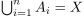.
Seien 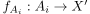 stetige Abbildungen, so dass für 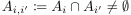 gilt
abgeschlossene Mengen mit einer lokalendlichen Überdeckung 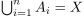.
Seien 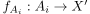 stetige Abbildungen, so dass für 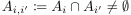 gilt
Dann existiert eine eindeutige, stetige Abbildung
mit
2. Beweis
Wir konstruieren unsere Abbildung folgendermaßen:
Sei  , so existiert insbesondere wegen 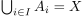 ein
, so existiert insbesondere wegen 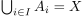 ein  mit 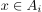
Dann sei 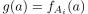.
Diese Abbildung ist linkstotal wegen und rechtseindeutig wegen der Forderung
Bleibt die Stetigkeit nach dem Satz über die Urbilder abgeschlossene Mengen unter stetigen Abbildungen zu zeigen:
Sei
mit 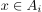
Dann sei 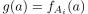.
Diese Abbildung ist linkstotal wegen und rechtseindeutig wegen der Forderung
Bleibt die Stetigkeit nach dem Satz über die Urbilder abgeschlossene Mengen unter stetigen Abbildungen zu zeigen:
Sei  abgeschlossen, so gilt für das Urbild nach Konstruktion:
abgeschlossen, so gilt für das Urbild nach Konstruktion:
 4
4
Dabei ist 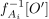 abgeschlossen in  wegen der Übertragung der Abgeschlossenheit von der Unterraumtopologie - schließlich ist nach Annahme abgeschlossen
Zudem ist 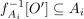 lokalendlich
Damit folgt aus der Abgeschlossenheit der lokalendlichen Vereinigung von abgeschlossenen Mengen, dass 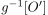 abgeschlossen ist und damit
wegen der Übertragung der Abgeschlossenheit von der Unterraumtopologie - schließlich ist nach Annahme abgeschlossen
Zudem ist 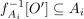 lokalendlich
Damit folgt aus der Abgeschlossenheit der lokalendlichen Vereinigung von abgeschlossenen Mengen, dass 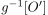 abgeschlossen ist und damit  stetig.
stetig.